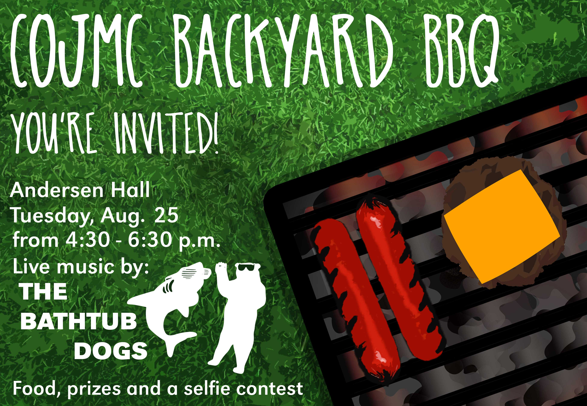
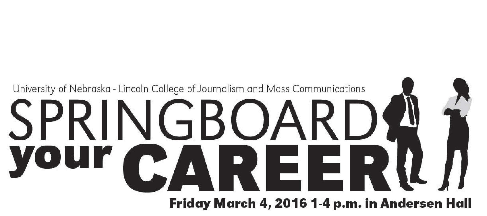

As CoJMC's student designer, everything that was displayed around the college came across my desk.
One of the best aspects of being a student designer at CoJMC was the opportunity to create content every day. Each piece of content I created for CoJMC was adapted to several different media (print, digital signage, email, etc.) to achieve maximum exposure. Working under CoJMC's Director of Marketing and Communications was extremely impactful on how I think as a communicator.
In my time as a designer at CoJMC I produced everything from wall wraps to championship banners. I designed and implemented graduate commencement booklets, invitations, postcards, and even the college's holiday card. I also created and delivered interactive presentations to aid in the recruitment of undergraduate students.
All of the work was done under tight deadlines and went through the university's approval process for communications.


*Some of these works have been scaled down to better fit in an online environment.*
You can still see some of my work hanging on the walls in Andersen Hall. I'm extremely thankful I had the opportunity to make an impact at CoJMC. My college experience there was more than fulfilling. If you're thinking about an undergraduate/graduate degree, I'd love to talk to you about what CoJMC has to offer!